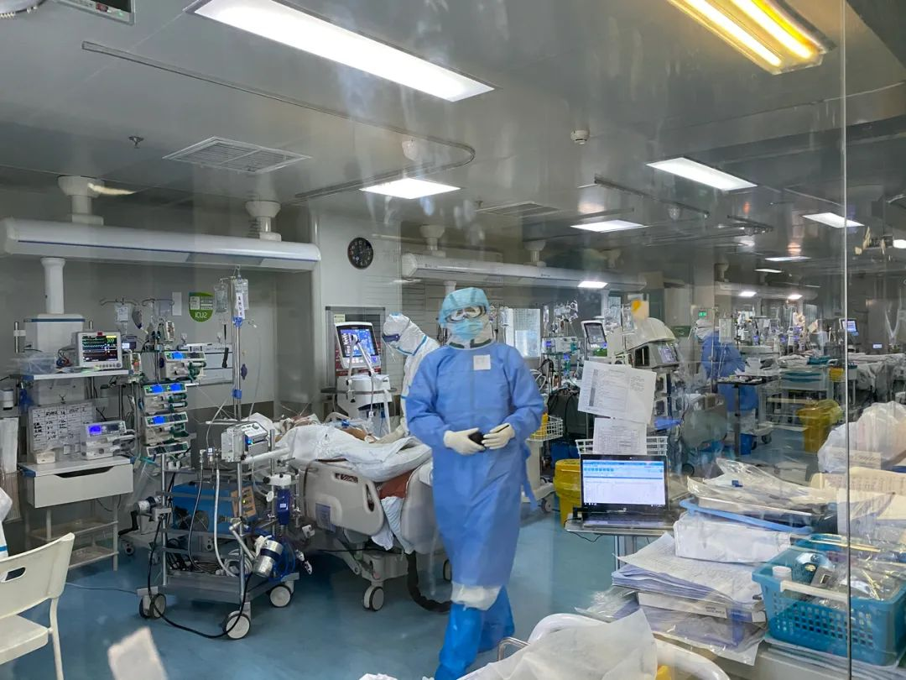
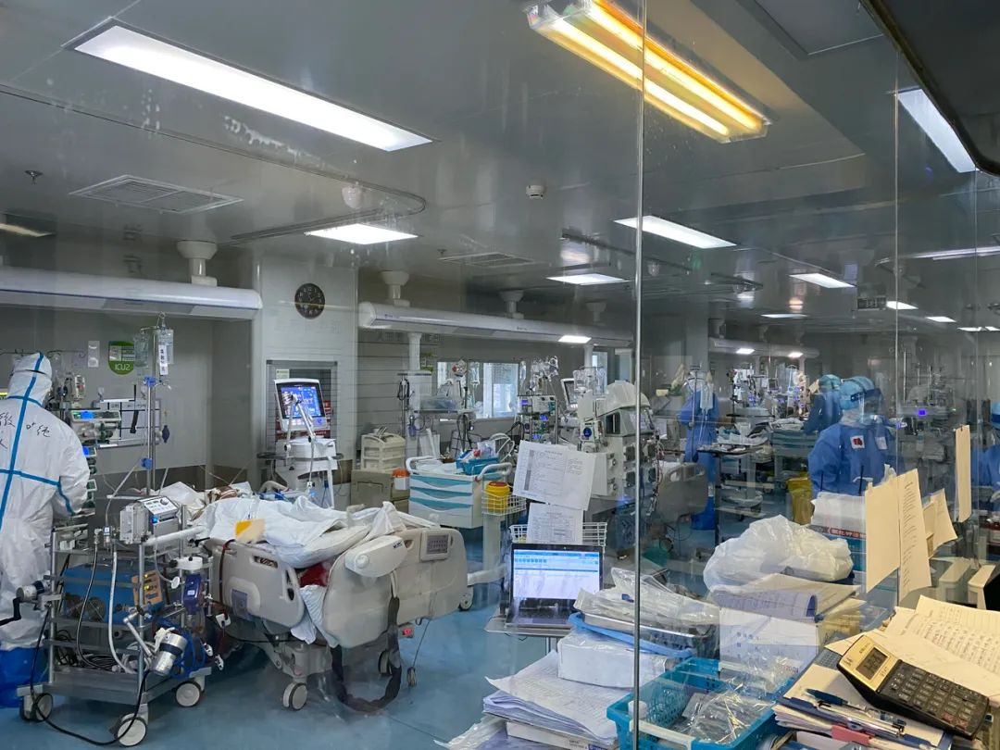
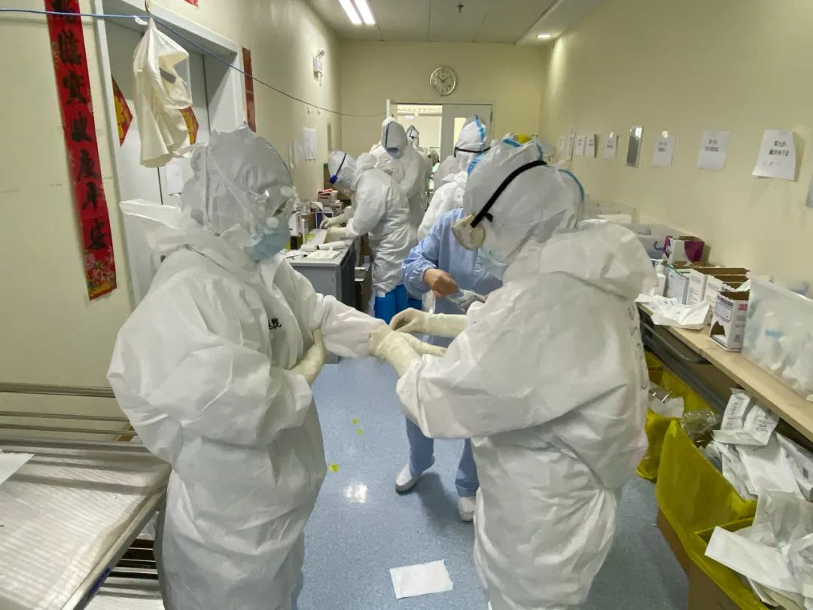

终极一战：与死神抢人
原文链接 备份链接 2月16日，四川省人民医院ICU主任黄晓波（中）在武汉红十字会医院7楼临时ICU病房里查看一位新冠肺炎危重症患者的病情 图/陈卓 全文共11346字，阅读大约需要24分钟。 令人揪心的数字每天都在跌落，但目前湖北仍 …

坚守危重症患者最后的生命防线



武汉肺科医院ICU病房。（本刊记者/李明子 摄）
3月23日中午，正是武汉市肺科医院住院部13层重症监护病区（ICU）最忙碌的时候，交接班医生在隔离病房外的清洁区走廊穿梭，原本10张病床的ICU在疫情期间临时扩建了一倍，公共区域更显狭小。
科主任胡明刚结束上午的巡床，换上绿色短袖工作服和拖鞋，找到一间临时存放物资的杂物间，坐在纸盒箱上和国家卫健委专家组成员、江苏省苏北人民医院重症医学科主任郑瑞强讨论病情，郑瑞强也换上了短袖，武汉当天的最高气温已经有23℃。
前几天还是“床等人”的ICU病房，在22日再次收满。“原本我负责的一病区，10张床，现在7个人在转ECMO（体外膜肺氧合），历史新高。”胡明说。对心肺功能衰竭的危重症患者来说，ECMO可以提供体外呼吸与血液循环，以维持患者生命，被称为ICU里的“终极武器”。
3月12日，湖北省新型冠状病毒肺炎疫情防控工作指挥部宣布，计划分期分批把武汉市50多家收治新冠肺炎的定点医院集中转向10家。腾退医院立即开展消杀工作，逐步恢复正常医疗秩序，满足广大市民的就医需求。
继续开放的10家新冠肺炎定点医院，包括由军队支援的泰康同济医院、湖北省妇幼保健院光谷院区、火神山医院，和国家卫健委专家驻点支援的金银潭医院、武汉市肺科医院、同济医院光谷院区、同济医院中法新城院区、协和医院西院、湖北省人民医院东院和雷神山等7家医院。
坚守危重症患者最后生命防线的各定点医院ICU再次迎来收治“高峰”。“现在压力更大。”胡明对《中国新闻周刊》说，他从元旦开始已经在医院连续工作80多天，现阶段不再有新发病例，但送来ICU的病人大多病程长、年龄大、合并基础病多，治疗难度大，还有部分患者病情仍在加重。

武汉协和西院ICU，医护人员正准备进舱。（本刊记者/李明子 摄）
3月19日晚，肺科医院收到一名从武汉市第一医院转入的70岁男性患者，来的时候就带着VV-ECMO（静脉体外膜肺）。入院后，患者持续高烧，血压降至危险值，需要再给患者股动脉插管，升级为VVA-ECMO，据胡明介绍，仅有5%使用VV-ECMO的患者会升级到VVA-ECMO，在国内三甲医院，也很少有这样的操作。
3月21日晚，由北京、江苏、浙江、安徽、湖北、内蒙古等10家医院的12名呼吸、重症、心外等学科的专家联手，经过3小时，完成了手术，患者的氧合指数终于从术前50%升到100%。
武汉协和西院区ICU也于3月20日接到了一位带着ECMO的转运患者，22日出现胃肠出血，当天上午，广州支援武汉协和医院西院ICU医疗队队长张挪富赶紧召集多学科专家会诊。“我们现在的工作就是怎么把一个个濒临死亡的患者救回来。”张挪富说，到三月中旬，累计收治的68名重症患者已经转出16人，据张挪富回忆，几天前又有2名患者病情稳定后，从2层ICU转到了楼上12层的一般重症病区。
为降低病死率，国家卫健委分派8名重症医学专家坐镇7家定点医院，其中雷神山医院因床位较多，32个病区共计1400多张床位，派驻了两位专家，临床医生们称他们是“重症八仙”。
国家卫健委医疗救治组专家、北京朝阳医院副院长童朝晖3月19日从金银潭医院转战到同济医院中法新城院区，“比我们前期还忙。”童朝晖说，现在管理的病人和医疗队都增加了，该院区2栋12层住院楼，每层都有东西两个病区，由20多个医疗队管理，“一方面要深入进去查房，了解病人情况，另一方面还要督导，该出院的患者安排出院，重点是重症救治，要降低病死率。”
“如果把ICU比作大炮，疫情早期无症状感染、轻症、重症都有，就像用大炮打蚊子，现在没有新增病例，剩下重症、危重症，就需要集中火力，发挥大炮的作用，不仅需要更多的医生，更需要有重症治疗、呼吸科背景的医生进驻到ICU的岗位，这样对最后一批病人会有更好的救治效果。”胡明说。
目前武汉肺科医院的ICU医生仍十分紧缺，在轮班的情况下，基本上1位ICU医生要负责3个病床。“越到最后阶段，更需要有经验的ICU医护人员。”郑瑞强说，目前各省支援队都是成建制来到武汉，包括各个专业、甚至来自不同城市的不同医院，理想状态是打乱建制，从各省队抽出组内ICU医护人员对口支援重症医学病房。
“最需要对口专业医生支援的定点医院主要是金银潭和肺科，已经提出了建议和要求，但这涉及国家卫健委、武汉市指挥部、各省医疗队和他们的前方指挥部，需要多方协调，还在沟通。”童朝晖说。
值班编辑：俞杨
推荐阅读
▼


原文链接 备份链接 2月16日，四川省人民医院ICU主任黄晓波（中）在武汉红十字会医院7楼临时ICU病房里查看一位新冠肺炎危重症患者的病情 图/陈卓 全文共11346字，阅读大约需要24分钟。 令人揪心的数字每天都在跌落，但目前湖北仍 …
原文链接 备份链接 整个2月，是上海第三批医疗队ICU医生团队的攻坚阶段，医生们急于寻找更好的治疗措施，提高治愈率，降低死亡率。 记者 | 黄 祺 昨天（3月16日）是上海市第三批援助湖北医疗队在武汉奋战的第50天，下午1点20分，上海医 …
原文链接 备份链接 【财新网】（记者 丁捷 赵宁）肆虐两个多月的新冠病毒已经袭击数万人，致2000多人死亡。病毒引发的症状从初期的发热、无力、轻咳，又恶化为呼吸衰竭，以及一系列的多器官衰竭，危及生命。在这场与死神争夺时间的“战役”中，氧气 …
原文链接 备份链接 *************▲*************湖北省医疗救治组专家在同济医院中法新城院区新冠肺炎重症病区与患者交谈。 （新华社/图） 全文共6264字，阅读大约需要14分钟。 就在徐慧连觉得患者能化险为夷时， …
原文链接 备份链接 基层工作的压力不断加大2月6日，武汉市蔡甸区人民医院的重症病房。摄影/长江日报 陈卓 武汉战“疫”的攻坚时刻 *本刊记者/刘远航 李明子 黄孝光* 发于2020.2.24总第936期《中国新闻周刊》 雷暴与风雪相继到 …